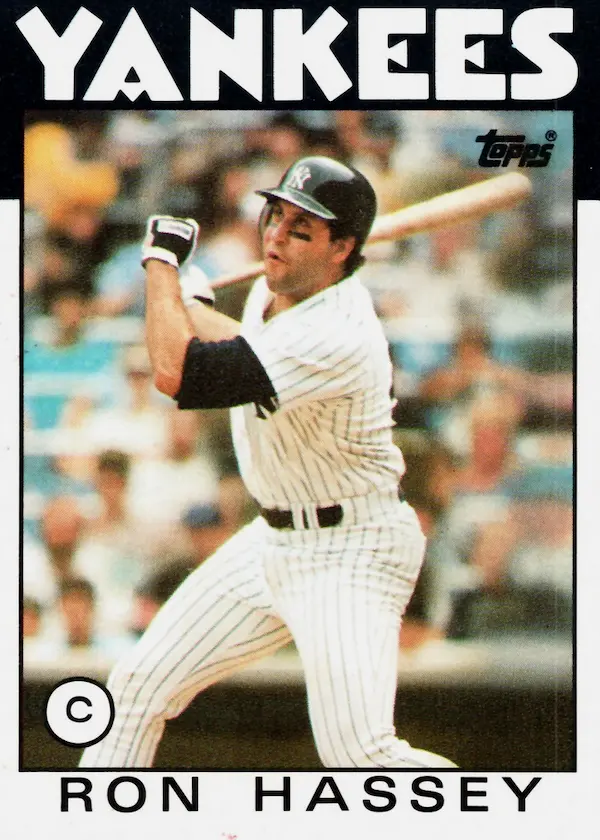

Ron Hassey
Career Highlights & Facts
(Facts are AI-generated and may require verification)
- Holds the unique distinction of being the only catcher to have been behind the plate for 2 perfect games in major league history.
- Transitioned from a collegiate All-American third baseman to a professional catcher.
- Caught 2 perfect games exactly 10 years apart.
Would you like to find out more about Ron Hassey?
Ron Hassey is the only catcher to have been behind the plate for two perfect games in the major leagues. Hall of Famers
Johnny Bench
Mike Piazza
Mickey Cochrane
Carlton Fisk
Gary Carter
, and
Roy Campanella
did not catch any.
Buster Posey
Yogi Berra
, and
Iván Rodríguez
have “only” one to their name. In fact, through the 2023 season, only 23 catchers have caught one.
Given this achievement, one could imagine that Hassey was blessed with a long career, elite defensive skills, a powerful bat, or all three. Though he lasted 14 years in the majors, only five times did he appear in as many as 100 games. He played for six different franchises and was traded several times, including three separate transactions in less than a year.
His primary asset was his lefthanded bat, which produced some good averages, albeit with just moderate power (his OPS+ was a league-average 100). As Bill James described Hassey in his revised
Historical Baseball Abstract
: “painfully slow and never a threat in Gold Glove voting, but hit .318 in 1980 (130 games), .323 in 1986 (113 games). #1 or #2 catcher for the A’s from 1988 through 1990 when they were the best team in baseball.”
He averaged 2.0 WAR per 162 games.
But across 1,192 career games, two perfect days shine through, 10 years apart:
, handling
Len Barker
;
, with
Dennis Martínez
on the mound.
The modest Hassey is “proud of that” – but admits he “got to catch a lot of good pitchers in that era.”
Much as John Milton – and later
Branch Rickey
– noted that “luck is the residue of design,” Hassey stated that “all the preparation we made before the game actually worked, and that’s very satisfying. You spent an hour in the meeting room going over hitters. . . [but] I didn’t have to execute. Lenny Barker had to do all the work. Dennis Martínez had to do all the work. All I had to do was help them get through the ballgame.”
* * *
Ronald William Hassey was born on February 27, 1953, in Tucson, Arizona. His parents were Joseph E. “Bill” Hassey
and Delores (née Maseeh).
The couple had three other children: Janet, Mary Ann, and Joe. Delores ran the household. Bill served in the Army from 1946-1948 and attended the University of Arizona for a year. He played two years (1949-50) as a minor-league outfielder in the New York Yankees organization.
After baseball he worked for 40 years in Tucson as a top salesman for a local wholesale liquor distributor.
Ron played both baseball and basketball at Tucson High and enjoyed fishing, hunting, and golf. The 6-foot-2, 200-pound Hassey was drafted by the Cincinnati Reds in the 23rd round of the 1972 amateur draft after leading unbeaten Tucson High to the state championship. He chose instead to enroll at the University of Arizona (UA). After his junior year he moved up one round, selected by Kansas City in the 22nd round of the June 1975 draft. The Royals planned to move him to catcher, and Hassey figured he’d be better off working at the new position while at college, so he again passed up a pro contract. “When I was at third base, you couldn’t say much,” Hassey remarked.
“Now I have to keep things going, talk to the pitchers, call for the pitches, make sure everybody knows what’s going on. I think (big league scouts) know I can play third base. Now if I show that I can (play catcher) too, then that will just help me more. There aren’t too many catchers who can hit left-handed.”
Hassey starred with the gold medal-winning US National Team in the 1974 Amateur World Series and the 1975 Intercontinental Cup, where he scored nine runs on 14 hits. His nine RBIs paced the 1975 Pan American Games, where the US squad lost to Cuba in the finals.
In his senior year the Wildcats won the 1976 College World Series thanks to Hassey’s team-leading eight RBIs, including one in the 7-1 clincher against Eastern Michigan. The victory was particularly sweet as the school eliminated its in-state rival, the Arizona State Sun Devils, in the semifinals to avenge six regular-season defeats plus another in the preliminary round. Cleveland picked Hassey in the 18th round of the draft and he signed shortly thereafter.
Almost five decades later Hassey is still UA’s all-time RBI leader with 235, and he held the single-season record of 86 until it was broken in 2023 by Kiko Romero.
He collected six hits in one game and three home runs in another. He was twice named All-American (1974 and 1976). Inducted into the university’s Hall of Fame in 1981,
he is regarded as the Wildcats’ all-time best catcher.
Hassey recalled his collegiate years as “without a doubt, the best part of my baseball career…winning the national title in 1976. Thank God I didn’t sign in ’75.”
Hassey suited up for the Indians organization immediately. In the summer of 1976, he played in 22 games for the Class A San Jose Bees (.307/.419/.419) and 21 more for the double-A Williamsport (Pennsylvania) Tomahawks (.279/.329/.324). In 1977 he was promoted to the Toledo Mud Hens of the International League (Triple A) and continued his solid hitting in 129 games (.296/.377/.415). In August
The Sporting News
noted the value of his versatility, as Cleveland platooned
Ray Fosse
and
Fred Kendall
behind the plate. Both backstops were likely to seek starting roles with other teams once the season ended. The weekly highlighted that Hassey was only in his second year as a catcher but showed ample promise.
Fosse was traded on September 9 to Seattle, opening a path for Hassey.
Seeking further experience during the winter, Hassey played in Venezuela with the Caracas
Leones
(Lions)
.
He missed a month after suffering a 17-stitch cut above his left eye while playing third base and won the batting title with a .326 average.
Hassey was invited to spring training in 1978, but the Indians wanted a more seasoned catcher and traded for Red Sox prospect
Bo Díaz
. Díaz, however, broke his ankle on April 15, opening a roster spot. Hassey said he “was sorry to see it happen…[but] was pleased to get called up. I feel it’s an opportunity for me. I’m going to try and do my best, show them I can catch.”
He debuted on April 23 in an 11-inning victory against the Red Sox and
Dennis Eckersley
. Eckersley and Hassey would become teammates 10 years later and play pivotal roles in the 1988 World Series.
Hassey hit .203 in 25 games for the parent club and returned to the minors in mid-June.
Gary Alexander
and Díaz caught most of the Cleveland games. For triple-A Portland, Hassey swatted 12 home runs in 72 games with a .323 average.
In 1979 Hassey broke camp with the big club and caught two innings of the Indians’ third game of the season. However, Cleveland believed he needed further seasoning, so he returned to the PCL, this time with triple-A Tacoma. But when Díaz suffered a broken index finger in June, Hassey was called up again, this time to stay.
Hassey delivered a solid .287 average with four home runs and 32 RBIs in 75 games. It bolstered his confidence: “After 1978, I wasn’t confident I couldn’t hit big league pitching, even though I always hit in the minor leagues. The question marks are gone. I’m mentally ready for next season. I had to learn how to communicate with the pitchers, how to call a game better.”
The front office agreed. Chief Executive
Gabe Paul
noted, “We like his intensity and desire and intelligence. Ron certainly is a player of the future for us.”
Manager
Dave García
was more reserved: “Ron Hassey has come a long way. He can be our catcher. But he needs to strengthen his legs. In the final innings, he came to bat drooping.”
As the 1980 season neared, he was seen as the team’s best backstop according to
The Sporting News
: “A year ago, Hassey had 32 RBIs in 223 at-bats. If he gets up 500 times, he’ll probably get 85. And as a catcher, he is improving fast.”
Hassey hit .318 in 447 at-bats and improved behind the plate: “I’ve had to work on my throwing,” he noted, also expanding on the theme of game-calling. “The big thing is. . . knowing the hitters and being able to pit our pitchers’ stuff that day against the hitters’ weaknesses.”
That winter Hassey signed a three-year, $750,000 deal, pushing contractual worries out of his mind. “I made no mistake in not going to arbitration,” he declared. “I got a good contract, I have security. I don’t need a whole lot of money to make me happy. If I improve like I expect, I’ll get the big money. For the Indians to even consider giving me a three-year guarantee shows they believe in me.”
On April 15, 1981, Hassey suffered a frightening injury against the Rangers when runner
Bump Wills
collided against his left knee. Hassey had to be carried off the field on a stretcher, but he only missed 11 games.
A month later, on May 15, he caught Len Barker’s gem, the first perfect game in the majors since Catfish Hunter’s in 1968. Speaking in 2021, Hassey noted the intense preparation preached by pitching coach
Dave Duncan
, despite the rudimentary video and computer analysis available at the time. “The tough part is getting Lenny to execute his pitches. We have charts on how we’re going to defend them. Going into the game, you’re well pretty well prepared…you’re not just going to be just putting fingers down. Dave Duncan was way ahead of his time…he had all kinds of chart he would chart himself…it might have Lenny Barker’s 20 at-bats with
Ernie Whitt
and we knew exactly what Ernie Whitt did against Lenny Barker. . .the pitches that got him. . .the count and the situation and so forth.”
Barker was effusive in his praise: “Ron Hassey called a great game.”
The duo orchestrated 103 pitches, only 19 of which were balls. No batter had a three-ball count, and every strikeout was swinging.
Three and a half decades later, he expanded on his rapport with his batterymate: “I felt really comfortable with Ron Hassey. He was a guy who was an all American third baseman out of Arizona. He was able to make a successful transition from third base to catcher. It was amazing to see how he progressed. He actually was a pretty darn good catcher, who did a good job and called a great game. He worked hard back there and was the only catcher to catch two perfect games, so he must have done something right.”
Hassey’s mitt is now at the National Baseball Hall of Fame Museum in Cooperstown.
During the strike-shortened 1981 season, he led the AL with 56% caught-stealing and 5.96 range factor per game behind the plate, despite regressing at the plate (.232/.297/.566).
In 1982 Hassey played in 113 games and hit .251, though his OBP was .356. He teamed up with Barker for another memorable outing on Father’s Day, June 20, 1982, this time against Boston. Barker had pitched the first 10 innings before Hassey’s bases-loaded single won the game in the 14th.
1983 proved to be frustrating as Hassey clashed with manager
Mike Ferraro
, who openly criticized his catcher to the media: “He seems very complacent behind the plate. That seems to be part of his makeup. He doesn’t appear to be eager to do anything. When he’s out of the lineup for a few days, he should take extra batting practice. He could be a good hitter, I don’t think he stays ready.”
Hassey lifted his batting average from .255 when Ferraro was dismissed to .270 at season’s end.
During the offseason the 30-year-old Hassey expressed willingness to stay with Cleveland: “I haven’t thought about leaving. In fact, if I were offered a multiyear contract, I probably would be willing to pass up free agency next year.”
Nevertheless, it proved to be a winter of discontent. Media reports claimed Hassey,
Rick Sutcliffe
Gorman Thomas
, and
Jim Essian
all demanded to be traded.
The latter duo was dealt during the offseason.
While Sutcliffe and Hassey began in the Indians’ opening day lineup in 1984, neither finished the year with the Tribe. On June 22 they and
George Frazier
went to the Chicago Cubs in exchange for
Mel Hall
Joe Carter
Don Schulze
, and prospect Darryl Banks. The trade was seen as an “all-in” move by the surprising Cubs, en route to their first postseason appearance in 39 years. However, Hassey injured his knee on July 4 while playing first base. After spending two months on the disabled list, he went 3-for-15 in September, mostly as a pinch-hitter. Between both clubs, he appeared in 67 games and hit .269/.337/.341. He did not appear for the Cubs in their loss to San Diego in the NLCS.
Hassey sought a trade after the season, saying, “With my big contract ($400,000), I don’t expect them (Cubs) to want me around just to pinch-hit and catch every once in a while.”
During the winter meetings, Chicago traded Hassey,
Porfi Altamirano
Rich Bordi
, and
Henry Cotto
to the New York Yankees for
Ray Fontenot
and
Brian Dayett
.
Hassey played consistently for the Yankees in 1985 and shared catching duties with
Butch Wynegar
, in a traditional righty-lefty platoon.
Hassey was productive (.296 with a career-high 13 homers and 42 RBIs), mostly against right-handers. The pair were friendly and could often be seen playing cards in the clubhouse.
On August 13 Hassey played a key role in veteran knuckleballer
Phil Niekro
’s 295th victory, both at the plate and behind it. His two passed balls allowed the White Sox to tie the game in the sixth inning. After the game, he observed, “Tonight was one of the toughest times I’ve had with the knuckleball. Most of the time the pitch comes down, but those two took off on me.”
He atoned with a seventh-inning home run that regained the lead, 4-3. As he came to bat, there was “one thing on my mind – those passed balls.”
Hassey’s game-high four RBIs also included a two-run blast in the fifth. He showed his two mitts from that season – one for Niekro, one for everyone else – in the 2012 documentary
Knuckleball!
Although his role seemed secure, New York offered Hassey to the White Sox in mid-September once
Tom Seaver
was placed on waivers.
The deal was not completed but Chicago remained interested, and on December 12, the White Sox acquired Hassey and
Joe Cowley
for Glenn Braxton, Mike Soper, and
Britt Burns
. Yankee owner
George Steinbrenner
was reputed to be interested in Fisk, who had become a free agent after the season ended, but Fisk opted to re-sign with the White Sox on January 8, 1986.
Hassey found himself again a backup.
Hassey’s 1986 performance was outstanding: .323/.406/.481 in 113 games. Even more impressive, it was accomplished as he was bounced back-and-forth like a yo-yo. In February White Sox manager
Tony La Russa
felt compelled to address rumors that Hassey would be swapped before the season: “Why would we trade someone who hasn’t a played a game for us? We got Ron for very good reasons beyond his left-handed bat…he’ll help ease
Joel Skinner
in [the team’s young catcher] and will be a big help to all our pitchers. He’s an excellent receiver. He and (pitching coach) Dave Duncan go way back together.”
However, Hassey was indeed dealt by Chicago back to the Yankees on February 13, this time with Chris Alvarez, Eric Schmidt, and
Matt Winters
for
Neil Allen
Scott Bradley
, and Braxton. According to
The Sporting News,
“We have a first. Catcher Ron Hassey and minor league outfielder Glenn Braxton have been exchanged in the same deals twice in less than two months by the same teams without playing an inning.”
Ron’s wife, Jennifer Hassey, quipped, “We said this is crazy. But I guess with the Yankees, you have to expect everything.”
The merry-go-round continued on July 30, as the Yankees swapped Hassey back to the White Sox, this time with
Carlos Martínez
and a player to be named later, for
Ron Kittle
, Skinner, and
Wayne Tolleson
. Yankees manager
Lou Piniella
noted, “I hate to lose Hassey. He’s always done everything I’ve asked of him and he’s been a good man to have on the team,” though the organization felt the trade addressed some weak spots in the lineup.
At the time he led the unofficial “Skoal Pinch Hitter of the Year” standings with six RBIs, one home run, and a 9-for-14 line off the bench.
In 1987 Hassey strained his right biceps and missed June and July. He rehabilitated in Hawaii and appeared in just 49 games as Fisk’s backup (.214/.303/.338). The team granted him free agency after the season, and he signed with Oakland on December 9.
In 1988 Hassey hit .257/.323./.368 in 107 games and mentored
Terry Steinbach
(104 games, .265/.334/.402) as the A’s dominated the AL and returned to the postseason for the first time since 1981.
Although the ALCS against the Red Sox is remembered as an A’s sweep, the first two games were decided by one run. Hassey played a key role in Game Two, scoring the winning run after singling off
Lee Smith
.
The heavily favored A’s lost to the Dodgers in the World Series, highlighted by
Kirk Gibson
’s magical pinch-hit homer off Eckersley in Game One. Hassey replaced Steinbach in the bottom of the ninth, receiving Eckersley, who got two quick outs but uncharacteristically walked
Mike Davis
. Eckersley and Hassey expected Davis to try to steal and reach scoring position; twice Eckersley threw over to keep the runner close. Hassey also made a snap throw, hoping to catch Davis off-balance. On a 2-2 pitch, Davis took off and Gibson, after taking, leaned over the plate. Umpire
Doug Harvey
did not call interference and the A’s opted not to protest.
According to La Russa, Hassey “looked into me and Dunc [Dave Duncan, who’d stayed with La Russa as pitching coach] in the dugout, saying ‘How do we finish him?’ Dunc gave him the sign for away and up.”
Hassey followed the playbook Oakland had devised for the hobbled Gibson: “The plan in that situation was to stay away with every pitch. If we were going to go inside, it was pretty much to knock him off the plate. But with the command that Eckersley has, you can easily stay down and away the whole at-bat. . . Making the hitter go after that pitch, I thought that was the best way to go. We stayed down and away pretty much with his fastballs and sliders. We get to a 3-2 count on Gibson and we go with a slider down and away. Eck got it up a little bit. I tell you, it wasn’t that bad of a pitch.”
“I could have shaken Hassey off,” said the closer, “but I didn’t. I thought it was the right pitch.”
Hassey disputes the claim that Gibson expected the full-count back-door slider, per
Mel Didier
’s advance scouting report. “How many times did Eckersley get to 3-2 count on a batter? Maybe a handful? He’s always ahead and never gets to 3-2 counts. It made for a great story…[Dodgers manager
Tom] Lasorda
made a big deal out of it.”
Hassey got into 97 games in 1989, starting 72. He missed some time after passing a kidney stone in early May. An amusing moment came after the A’s welcomed
Rickey Henderson
back to Oakland in a June trade. Since Hassey wore #24, Henderson’s number with the Yankees, the outfielder acquired the number from Hassey and “bought [Hassey] a new suit…he needed one.”
On August 22 Hassey struck out three times as the Rangers’
Nolan Ryan
reached a milestone: 5,000 strikeouts. He missed being the answer to the trivia question, though, becoming victim #4,999 and #5,001 (in between was Henderson).
Hassey went 1-for-6 in the ALCS against Toronto but did not play in the World Series, in which Oakland swept the Giants.
The veteran’s role remained similar with the A’s in 1990: 94 games played, 68 starts. He got into five postseason games, going 2-for-6 in the World Series, which was a stunning sweep for Cincinnati.
Hassey was not sanguine about returning to Oakland in 1991. That November he said, “They haven’t talked to me, but that’s been pretty standard with them. They haven’t said anything to me until about a week before spring training.”
Hassey became a free agent and signed a one-year contract with Montréal on February 15, 1991. He turned 38 before the season began. He got into 52 games, starting 34 while sharing duty with
Gil Reyes
Mike Fitzgerald
, and
Nelson Santovenia
.
The highlight of the Expos’ summer was on July 28: Dennis Martinez’s masterpiece at Dodger Stadium. The batterymates were the two oldest players on the field. Hassey was modest about his role in Martínez’s gem, saying after the game, “I was just back there catching him. He wasn’t afraid to take chances, and I just went along with him. The way I figure it, either you get the no-hitter or you don’t. You don’t do anything different, you don’t pitch any different. You go after them and see what happens.”
Aware of his role in two historical events, Hassey noted the performance “was a lot different than Lenny [Barker]’s. Lenny was. . .a wild pitcher. Dennis is a pitcher’s pitcher.”
In 2021 he recalled, “From the seventh inning on, I actually even told the pitching coach [
Larry Bearnarth
] we got something special going tonight. Sit back and watch it…Dennis had to hit his spots, he had to keep the batter off balance. Dennis Martínez was a control pitcher. Very rarely did he miss his locations.”
Hassey retired as a player after the 1991 season. After a year off, he returned to the major leagues, serving as a coach for the Colorado Rockies in the franchise’s first three years (1993-95). He then joined the St. Louis Cardinals as the bench coach for Tony LaRussa in 1996 but left after one year.
Hassey returned to his home state of Arizona as another expansion franchise – the Diamondbacks – was launched. He served first as a special assistant to general manager Joe Garagiola Jr. (1998-2000) and then as minor league field coordinator (2001-2003). In 2004, he managed the Carolina Mudcats, double-A affiliate of the Florida Marlins, and served as the bench coach for the Seattle Mariners from 2005-2006.
After a few years away from the sport, Hassey managed the Jupiter Hammerheads (Class A Advanced affiliate of the Marlins) in 2010-2011 and the triple-A New Orleans Zephyrs (also a Marlins affiliate) in 2012. Several years later he acknowledged having to balance his competitive spirit with the organizational goal: “You want to win, but the bottom line is to develop all players and get them to the big leagues…get them their at-bats, to improve, and move them up the ladder.”
While Hassey did not enjoy a turn as a big-league skipper, he appreciated how “being behind the plate gives you the overlook of the whole game. (So) that’s probably a reason why there’s a lot of ex-catchers being managers.”
This trait was shared by his former managers
Billy Martin
and La Russa: “They were always ahead of the game. It seemed like during the game they were always looking for that extra edge…what possibly could happen before it even happened. I enjoyed playing for both guys and I learned a lot from them.”
The family of Hassey and his wife Jennifer (née Burk) included a baseball-playing son. Brad Hassey, a second baseman – who’d been a batboy for the Rockies from 1994-1996, overlapping with his father’s tenure as coach – was a 19th-round draft pick of the Toronto Blue Jays in 2002. He played in the Jays organization from 2002-2007, getting as high as Triple A.
Hassey still lives in Tucson with Jennifer and has become an avid golfer and wine enthusiast during his retirement.
Acknowledgments
This biography was reviewed by Rory Costello and Rick Zucker and fact-checked by Dana Berry.
Bill James,
The New Bill James Historical Baseball Abstract
(New York: Free Press, 2001), 425, 432.
Paul Ivice, “Former major-leaguer Hassey takes over as Jupiter Hammerheads manager,”
Palm Beach Post,
April 7, 2010,
https:
.
Dennis Manoloff, “Interview with Legendary MLB Catcher Ron Hassey,” YouTube/Press Play Podcasts, May 13, 2021,
https://www.youtube.com/watch?v=7KlB3YUUYxw
Joseph (Bill) Hassey Player Card, The Sporting News Player Contract Card Collection, LA84 Foundation,
https://digital.la84.
Dolores Hassey Obituary,
https:
Joseph (Bill) Hassey Player Card, The Sporting News Player Contract Card Collection.
“Services set for ex-UA outfielder Joseph Hassey,”
Tucson Citizen
, January 30, 2003: 24.
Craig Muder, “#CardCorner: 1989 Topps Ron Hassey,” Baseball Hall of Fame, accessed March 24, 2024,
https://baseballhall.org/discover/card-corner/1989-topps-ron-hassey
Muder, “#CardCorner: 1989 Topps Ron Hassey.”
https://arizonawildcats.com/documents/2024/2/6/2024_BSB_Media_Guide.pdf
.
Ronald Hassey, HOF, University of Arizona Athletics,
https://arizonawildcats.com/sports/2013/11/12/209305515.aspx
https://arizonawildcats.com/sports/2015/9/5/209273862.aspx
“We picked Arizona Baseball’s all-time starting nine,” August 19, 2020,
https:
Jay Gonzales and Steve Rivera interview with Ron Hassey, “Eye on the Ball: Show with Tucson High, Arizona Wildcats great Ron Hassey Highlights Week,”
All Sports Tucson,
June 27, 2020,
https:
Russell Schneider, “Divided Duty Multiplies Grief of Tribe Catchers,”
The Sporting News,
August 13, 1977: 18.
Muder, “#CardCorner: 1989 Topps Ron Hassey.”
Bob Sudyk, “Hassey No. 1 in Tribe’s Mitt Plans,”
The Sporting News,
November 3, 1979: 54.
Sudyk, “Hassey No. 1 in Tribe’s Mitt Plans.”
Bob Sudyk, “Garcia Stays as Manager, Plans to Toughen Indians,”
The Sporting News,
October 20, 1979: 42.
Bob Sudyk, “Indians May Trade Away a Catcher,”
The Sporting News,
May 10, 1980: 12.
Bob Sudyk, “Hassey-Diaz Duo Clicks,”
The Sporting News,
September 27, 1980: 25.
Bob Sudyk, “Hassey Leads Band Without Any Bugles,”
The Sporting News
, March 21, 1981: 46.
Manoloff, “Interview with Legendary MLB Catcher Ron Hassey.”
Bob Sudyk, “Perfecto: Barker First to Pitch Gem Since Hunter Did It in ’68,”
The Sporting News,
May 30, 1981:11.
Sudyk, “Perfecto: Barker First to Pitch Gem Since Hunter Did It in ’68.”
Vince McKee, “Lenny Barker reflects back on his perfect game 35 years later with an out-by-out breakdown,”
Cleveland Sports Insider/Fan Nation,
May 16, 2016,
https:
“A.L. East,” Sheldon Ocker,
The Sporting News,
June 6, 1983: 19.
Sheldon Ocker, “A.L. East: Tribe Has Improved Under Corrales,”
The Sporting News
, September 19, 1983: 15.
Sheldon Ocker “A.L. East: Bernazard Happy to Join Tribe,”
The Sporting News,
December 26, 1983: 44.
Joe Goddard, “Cubs Seeking Lefthanded Pitching,”
The Sporting News,
November 5, 1984: 50.
Wynegar, a two-time All-Star with the Twins, hit .293 with the Yankees in 1982 and .296 in 1983. Not as evident at the time was his fielding prowess. Baseball-Reference credits his defense for 54 runs (saved) from fielding, compared to -11 for Hassey.
Michael Martinez, “Yanks Win 7th and Trail by 6,”
New York Times,
August 13, 1985: A19.
Martinez, “Yanks Win 7th and Trail by 6.”
“Knuckleball!”, Amelia & Theo Films, FilmBuff (2012),
https://www.imdb.com/title/tt2343601/
“Sox Wanted Ron Hassey for Seaver,”
Chicago Tribune,
September 12, 1985.
Murray Chass, “Hassey Returns to Yankees,”
New York Times,
February 14, 1986: A27.
“A.L. West,”
The Sporting News,
February 17, 1986: 44.
Peter Gammons, “A.L. Beat,”
The Sporting News,
February 24, 1986: 40.
Chass, “Hassey Returns to Yankees.”
Bill Madden, “Yanks’ Deal Fills 3 Spots,”
The Sporting News,
August 11, 1986: 18.
“Skoal Scoreboard: Skoal Pinch Hitter Update,”
The Sporting News,
August 18, 1986: 21.
For a delightful account of the top of the ninth inning, read Bobby DeMuro, “Dennis Eckersley, Doug Harvey, and Game 1 of the 1988 World Series,”
Calisportsnews
, February 20, 2015,
https:
Mel Antonen and Ted Keith, “’That was a cool feeling’: An oral history of Kirk Gibson’s iconic 1988 home run,”
Sports Illustrated,
October 15, 2013,
https:
.
Antonen and Keith, “’That was a cool feeling’: An oral history of Kirk Gibson’s iconic 1988 home run.”
Antonen and Keith, “’That was a cool feeling’: An oral history of Kirk Gibson’s iconic 1988 home run.”
Jay Gonzales and Steve Rivera interview with Ron Hassey. Per Baseball-Reference.com, Eckersley faced 21 batters with a full count during the 1988 regular season. He allowed two singles, five walks, hit one batter, and retired the other 13, nine via strikeouts.
https://www.baseball-reference.com/players/split.fcgi?id=eckerde01&year=1988&t=p
Bob Elliott, “A vital addition to a winning mix,”
The Sporting News,
August 16, 1993: 8.
Bill Plaschke, “Notebook: Perfect Game Not New to Hassey,”
Los Angeles Times,
July 29, 1991.
Plaschke, “Notebook: Perfect Game Not New to Hassey.”
Manoloff, “Interview with Legendary MLB Catcher Ron Hassey.”
“CWS@CLE: Hassey discusses playing, coaching career,”
MLB.com
, June 9, 2017,
https://www.youtube.com/watch?v=O8dRdDc6z0Y
Toni-Ann Miller, “In Jupiter, ex-major league catcher Ron Hassey patiently waits for his opportunity,”
Palm Beach Post,
July 14, 2010,
https:
“CWS@CLE: Hassey discusses playing, coaching career.”
Full Name
Ronald William Hassey
Born
February 27, 1953 at Tucson, AZ (USA)
Stats
Baseball Reference
Retrosheet
Career Totals
| WAR | AB | H | HR | BA | R | RBI | SB | OBP | SLG | OPS | OPS+ |
|---|---|---|---|---|---|---|---|---|---|---|---|
| 14.7 | 3440 | 914 | 71 | .266 | 348 | 438 | 14 | .340 | .382 | .722 | 100 |
Statistics via Baseball-Reference.com
The Original Clue